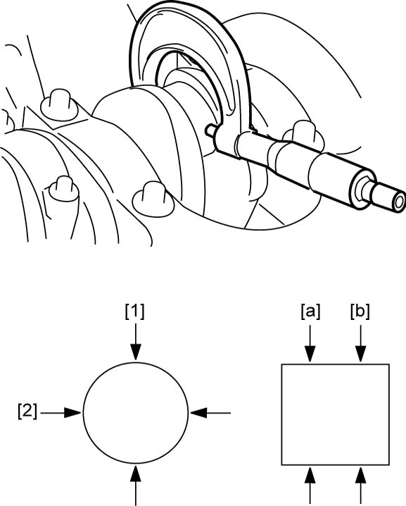
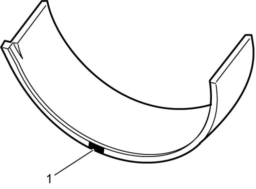
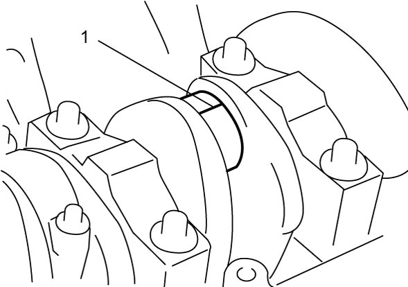
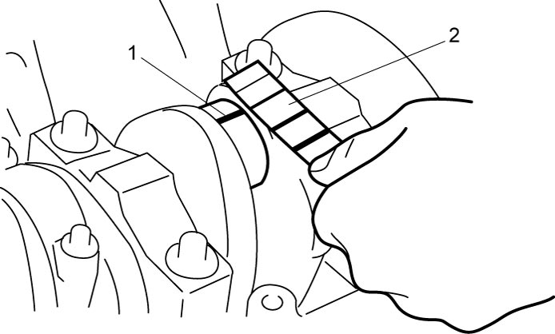
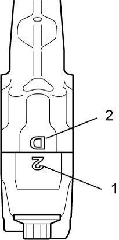
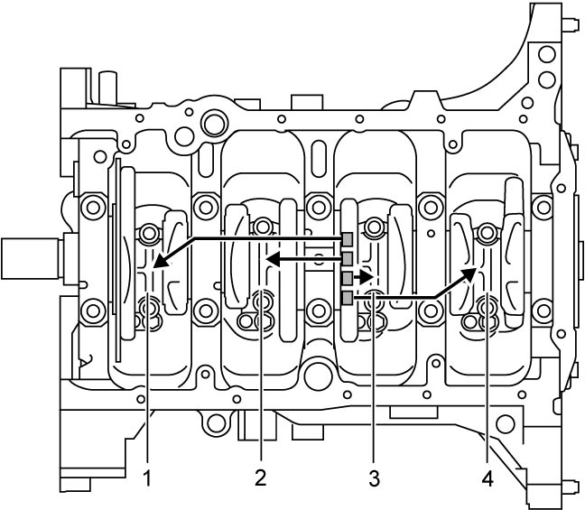

1D
| Crankshaft Pin and Connecting Rod Bearing Inspection |
Crankshaft Pin Diameter
Check crankshaft pin for uneven wear or damage. Measure crankshaft pin for out-of-round or its taper with a micrometer. If crankshaft pin is damaged or out-of round or taper is out of limit, replace crankshaft or regrind crankshaft pin to undersize and use undersize bearing.
NOTE:
When regrinding crank pin to undersize, use undersize connecting rod bearing.
Crankshaft pin diameter
| Connecting rod bearing size | Crankshaft pin diameter |
|---|---|
| Standard | 41.982 – 42.000 mm (1.6529 – 1.6535 in.) |
| 0.25 mm (0.0098 in.) undersize | 41.732 – 41.750 mm (1.6430 – 1.6437 in.) |
Crankshaft pin taper ([a] – [b]) and out-of-roundness ([1] – [2])
Limit: 0.01 mm (0.0004 in.)

 "Expand image")
Connecting Rod Bearing General Information
•Service connecting rod bearings are available in standard size and 0.25 mm (0.0098 in.) undersize, and standard size bearing has five kinds of bearings differing in tolerance.
•For identification of undersize bearing, it is painted red at the position as shown in figure. Undersize bearing thickness is 1.605 – 1.615 mm (0.0631 – 0.0635 in.) at its center.
•For identification of undersize bearing, it is painted red at the position as shown in figure. Undersize bearing thickness is 1.605 – 1.615 mm (0.0631 – 0.0635 in.) at its center.

 "Expand image")
| 1. | Painting |
Connecting Rod Bearing Visual Inspection
Check bearing shells for signs of fusion, pitting, burn or flaking and observe contact pattern. Defective bearing shells must be replaced.
Connecting Rod Bearing Clearance
NOTICE:
Using connecting rod bolts that are deformed exceeding the service limit could lead to engine problems.
After checking connecting rod bearing clearance, check that connecting rod bolts are not deformed exceeding the service limit referring to “Connecting rod bolt deformation” under Piston Pin and Connecting Rod Inspection:K14C.
NOTE:
Do not rotate crankshaft while gauging plastic is fitted.
1)Clean connecting rod bearings and crankshaft pin.
2)Place a piece of gauging plastic (1) to full width of crankshaft pin as contacted by bearing (parallel to crankshaft), avoiding oil hole.


 "Expand image")
3)Without applying engine oil, install connecting rod bearings and its cap referring to Step 1) – 5) “Installation” under Piston, Piston Ring, Connecting Rod and Cylinder Removal and Installation:K14C.
4)After three minutes, remove cap and measure gauging plastic (1) width (clearance) at the widest point using a scale (2) on gauging plastic envelope.
If clearance exceeds its limit, select a new standard size connecting rod bearing.
After selecting new connecting rod bearing, recheck clearance.
If clearance exceeds its limit, select a new standard size connecting rod bearing.
After selecting new connecting rod bearing, recheck clearance.
Connecting rod bearing clearance
Standard: 0.032 – 0.050 mm (0.0012 – 0.0019 in.)
Limit: 0.061 mm (0.0024 in.)

 "Expand image")
5)If clearance cannot be brought to its limit even by a new standard size bearing, use next thicker bearing and recheck clearance or regrind crankshaft pin to undersize and use 0.25 mm (0.0098 in.) undersize bearing.
Selection of Connecting Rod Bearing
If engine is under the following conditions, select a new standard bearing as follows, and install it.
•Bearing is defective.
•Bearing clearance is out of specification.
•Crankshaft or connecting rod is replaced.
•Bearing clearance is out of specification.
•Crankshaft or connecting rod is replaced.
1)Check stamped numbers on connecting rod and its cap as shown.
Three kinds of numbers (“1”, “2” and “3”) represent the following connecting rod big-end inside diameters.
For example, stamped number “1” indicates that corresponding connecting rod big-end inside diameter is 45.0000 – 45.0060 mm (1.77616 – 1.77188 in.).
Three kinds of numbers (“1”, “2” and “3”) represent the following connecting rod big-end inside diameters.
For example, stamped number “1” indicates that corresponding connecting rod big-end inside diameter is 45.0000 – 45.0060 mm (1.77616 – 1.77188 in.).
Connecting rod big-end inside diameter
| Stamped number | Connecting rod big-end inside diameter |
|---|---|
| 1 | 45.0000 – 45.0060 mm (1.77616 – 1.77188 in.) |
| 2 | 45.0061 – 45.0120 mm (1.77190 – 1.77212 in.) |
| 3 | 45.0121 – 45.0180 mm (1.77213 – 1.77236 in.) |

 "Expand image")
| 1. | Connecting rod big-end inside diameter number |
| 2. | Weight indication mark |
2)Check crankshaft pin diameter. On crank web No.5, four alphabets are stamped as shown in figure.
Three kinds of alphabet (“A”, “B” and “C”) represent the following crankshaft pin diameter respectively.
For example, stamped “A” indicates that corresponding crankshaft pin diameter is 41.9940 – 42.0000 mm (1.65331 – 1.65354 in.).
Three kinds of alphabet (“A”, “B” and “C”) represent the following crankshaft pin diameter respectively.
For example, stamped “A” indicates that corresponding crankshaft pin diameter is 41.9940 – 42.0000 mm (1.65331 – 1.65354 in.).
Crankshaft pin outer diameter
| Stamped alphabet | Crankshaft pin diameter |
|---|---|
| A | 41.9940 – 42.0000 mm (1.65331 – 1.65354 in.) |
| B | 41.9880 – 41.9939 mm (1.65308 – 1.65330 in.) |
| C | 41.9820 – 41.9879 mm (1.65284 – 1.65306 in.) |

 "Expand image")
| 1. | Crankshaft pin No.1 | 3. | Crankshaft pin No.3 |
| 2. | Crankshaft pin No.2 | 4. | Crankshaft pin No.4 |
3)There are five kinds of standard bearing thickness and they are painted in the following colors.
Each color indicates the following thickness at the center of bearing.
Each color indicates the following thickness at the center of bearing.
Standard size connecting rod bearing thickness
| Color painted | Bearing thickness |
|---|---|
| Blue | 1.4991 – 1.5020 mm (0.05902 – 0.05913 in.) |
| Yellow | 1.4961 – 1.4990 mm (0.05890 – 0.05901 in.) |
| Nothing | 1.4931 – 1.4960 mm (0.05879 – 0.05889 in.) |
| Black | 1.4901 – 1.4930 mm (0.05867 – 0.05877 in.) |
| Green | 1.4870 – 1.4900 mm (0.05855 – 0.05866 in.) |
| 1. | Paint |
4)From number stamped on connecting rod and its cap and alphabet stamped on crank web No.5, determine new standard bearing to be installed to connecting rod big-end inside, referring to the following table.
For example, if number stamped on connecting rod and its cap is “1” and alphabet stamped on crank web No.5 is “B”, install a new standard bearing painted in “Black” to its connecting rod big-end inside.
For example, if number stamped on connecting rod and its cap is “1” and alphabet stamped on crank web No.5 is “B”, install a new standard bearing painted in “Black” to its connecting rod big-end inside.
Connecting rod bearing cross-reference selection table (standard size)
| Stamped number for connecting rod big end inside diameter | ||||
|---|---|---|---|---|
| 1 | 2 | 3 | ||
| Stamped alphabet for crankshaft pin diameter | A | Green | Black | Nothing |
| B | Black | Nothing | Yellow | |
| C | Nothing | Yellow | Blue | |
5)Check bearing clearance with newly selected standard bearing referring to Connecting Rod Bearing Clearance.
If clearance still exceeds its limit, use next thicker bearing and recheck clearance.
If clearance still exceeds its limit, use next thicker bearing and recheck clearance.